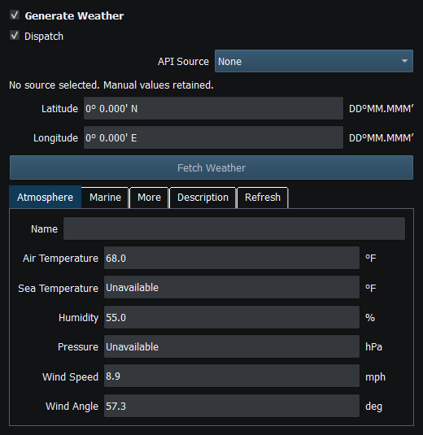
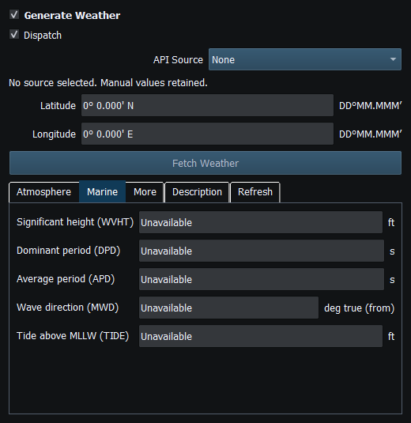
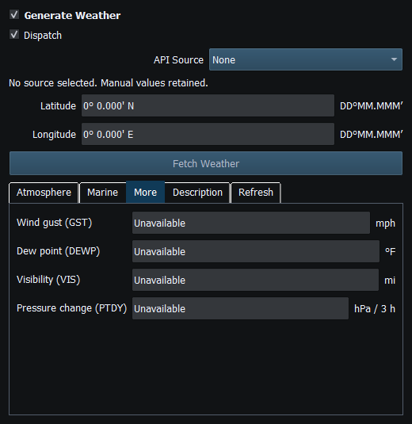
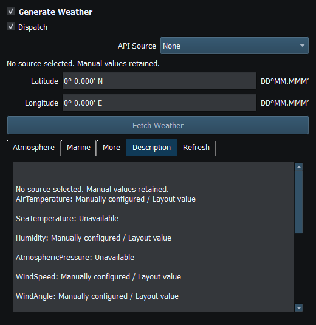
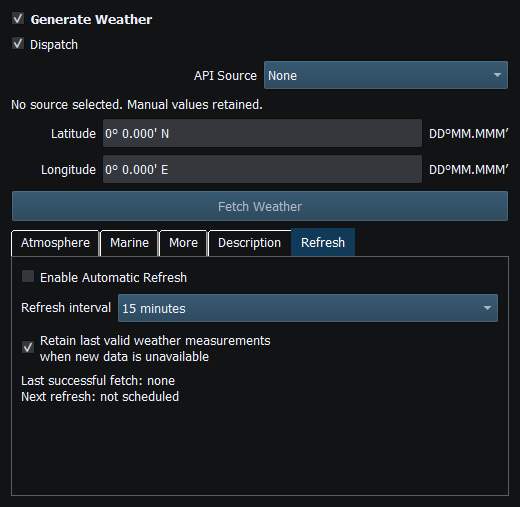
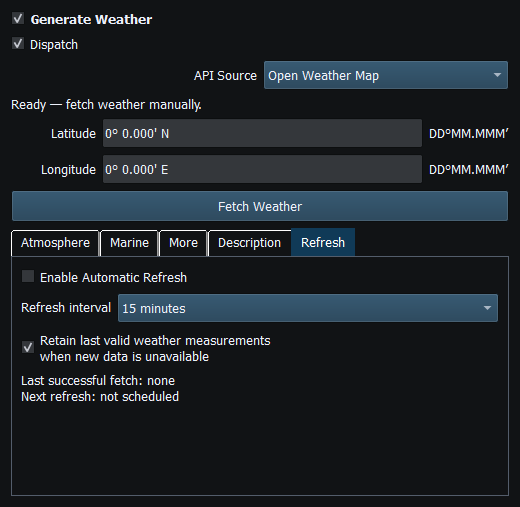

Generate Weather can use manually entered values or configured weather providers. Atmospheric, marine and descriptive observations are not interchangeable, and not every provider/station supplies every field.
Ordinary simulated motion is allowed during retrieval. The application associates a cycle with request coordinates and applies locality/freshness safeguards; a large relocation or superseded request can legitimately invalidate a delayed result. Do not retry on every coordinate change. Current cycle locality is bounded, including a 5 km movement limit from its request snapshot; this is an application validity policy, not a provider accuracy guarantee.
Atmosphere, Marine, More, Description and Refresh show the available conditions and scheduling controls. Check observation time, source and stale-data indications. Values restored from a Layout may be older than the current location or conditions.
When Setup enables environmental influence, valid Weather conditions contribute simulated wind drift and wave attitude. Water-current and wind-induced-yaw effects are not available. Without valid applicable conditions, those environmental effects are not applied.
Fetching weather updates the Weather source. It does not enable external instrument Sending.
Reading guide: Read top to bottom: API Source, request coordinates, Fetch Weather, then parameter tabs. The Refresh tab controls scheduling; Dispatch controls delivery and does not authorize network transmission.

Figure 49. Review or enter atmospheric temperature, humidity, pressure and wind values. Click to enlarge.

Figure 50. Marine values and waves are distinct from atmospheric observations. Click to enlarge.

Figure 51. Additional provider fields may be unavailable; the simulator does not invent missing observations. Click to enlarge.

Figure 52. Provider descriptions and observation context must be reviewed before using data. Click to enlarge.

Figure 53. Automatic refresh is explicitly configured; fetching weather does not enable Sending. Click to enlarge.

Figure 54. Choose Open Weather Map as the weather provider; configure its API key in Setup. Click to enlarge.
Figure 55. Choose National Data Buoy Center and review the selected station and available measurements. Click to enlarge.
Generating NMEA Data · Enable, Dispatch and Sending · Manual Vessel Movement · Autopilot and Route Following · Game Controller Mode · Engine and Transmission Simulation · AIS Simulation · Windlass Simulation · Connection Troubleshooting · Route Overview · Engineering Units